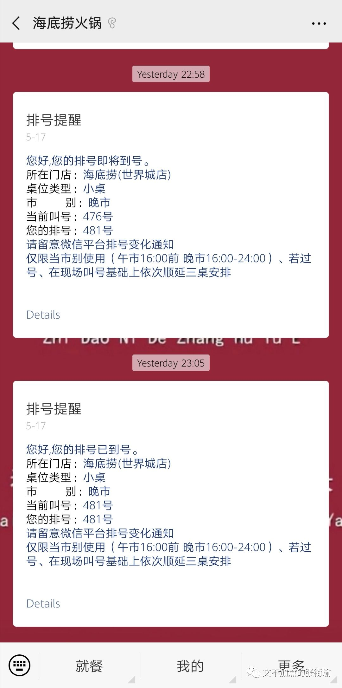
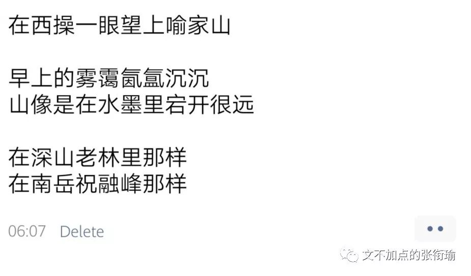

张衔瑜的第94篇推文
共计3746个字
也只是我，然后我在紫菘，这么简单。
Fri. 20:00
出门吃晚餐。
早上快六点醒来，去鲁磨路过早，上课。
回寝，午餐，看了会儿剧开始写论文。
五点半撑不住了，睡到七点半。
现在醒了，给家里奶奶外婆打了电话。
重新校对了一遍工作计划：
1. 争取转钟之前把中午拿到的这一批数据处理完，然后明早组会拿过去和导师讨论；
2. 下午是和体能测试老师约好了的去补测，我们年级测试的时候因为中途摔伤了就没有继续，跟下一级的也因为一些事情错过了，最近也应该要重新测试了；
3. 晚上如果可以的话，一共有三个音乐节，想去星巢音乐节听落日飞车、deca joins、草东没有派对还有赵雷，这也是早就盯上了的。
Fri. 20:50
导师在群里发消息说自己还在外地出差，让我们发工作计划但是明天组会取消。我回了收到之后就开始问体测老师，能不能明早去补测。如果可以的话那么明早体测完了还可以回寝睡一觉，然后下午再去音乐节听听歌。

想着想着，码代码的手还一直在继续着。这一批的数据不做完总觉得心里不踏实。本来我一直习惯的是不要等DDL来催我，而是先把事情都做完但是我不说，慢慢地玩到DDL附近和大家一起哭天喊地之后，然后再把做好的成果稍早一点点地拿出来。
一起地，戳了小伙伴想着是不是会一起去音乐节。
Fri. 21:34
紫菘停电。停电的同时，因为是压力供水，于是水也停了。当然，用电的互联网也没有了。5G还没有部署过来，4G也像我的脑子一样被卡断。
随缘和同学一起吐槽，去空调还有余凉的寝室坐一坐。走廊上是打着赤膊的同学，光着膀子四处走来走去。早就通知了被安排来查寝室违规用电之类的权益部同学，也还是敬业地打着手电一个一个寝室地排查安全问题。
应急照明灯下开了一桌扑克，为了避免评论区出现一堆插翅♂逃，在这里就不附图了。
Fri. 21:53
为什么停电？
看到电气学院给了个公告。
还有多久来电？
不知道。
你对今晚来电有信心没有？
没有。
到处黑也黑累了，和朋友在评论区聊天也没有聊出什么来。于是和另一个被生活所迫的同学决定出去过一晚上。把电脑合上，把电脑装进书包里，书包上肩。决定了出门就出去。
等朋友过来的时候，看到空间一万个朋友在西操，于是想着也去操场上走一会儿。
逆着人群走的时候，跑步的人跑太快了反应不过来，但是走路的人却可以。一路看见人就一路say hi 过去，就像是逆着西十二下课的人群走一样。估摸着大家，都是寝室没电了然后出来的的吧。不过也挺奇怪的，这种潮湿的天气走得一身的汗不会更难受吗？毕竟没水洗澡。
Fri. 22:35
在海底捞排了一个小桌。
然后在世界城等啊等，等到所有的商铺都关了门，只剩下海底捞。
如果不是海底捞晚上有69折大学生优惠，比出去开房学习还便宜，还可以吃点好吃的。如果不是被紫菘安排了谁也不会没事来这里。如果不是被生活安排了谁也不需要这样子。

但海底捞还是可以吃的，海底捞的服务也是真的不一样。
两个拿着电脑的男大学生，写服务生看不懂的英文论文和代码。猪肚鸡锅底已经沸腾得在汤面上泛起了一层鸡油。服务生过来关小了火，然后舀去了汤上的油，拿了两条热毛巾给我们随即离去。
“我们这样在海底捞写论文肝代码，要是被拍了就成网红了吧。”
“没事你已经这么social了。而且如果他们对渣科有点认识的话，也不会惊讶。”
Sat. 01:41
吃完了火锅，服务生过来说他们准备去用工作餐了，问能不能先付过款。我们换了一个已经打扫好的桌子开始继续写我们要写的。
数据处理的结果并不理想。尽管这是和我的预想相符合的，但真的拿到的时候心情还是挺沉重的。
是火锅不好吃？还是海底捞服务不够好？我绝对没有黑海底捞火锅或者海底捞服务的意思，可吃完深夜海底捞之后还有的难过，就确实是难过了。
给导师发过去了消息，导师也还没有休息。但问题三言两语还是说不清楚，于是把问题遗留在了这里，准备过两天再系统地说。
忽然朋友说自己肝不动了，十个小时之后还有一门考试在等着。我虽然没什么感觉，但是知道睡觉是一个不能勉强的事。东边的门禁就只是一个刷卡的门禁，但紫菘是真的有一把物理大锁卡在门上面。我也不知道这是为什么，去问也问不出一个所以然来。
就像光谷转盘往珞喻路东段走，全长约四公里的距离内就只有一个珞雄路地铁站的地下通道，所有地上通道都被施工和围栏堵住了的情况下，晚上还会按时把地铁站过街的门锁了。
世界上本来有路，武汉的基建开工，就都封死了，而且还大声告诉你：
这里不是有路吗你干嘛不走，
给你留了路啊为什么你不走？
Sat. 02:24
学校唯一官方承认的二十四小时刷夜地方，就只在师生服务中心。
我编完最后一点总结问题出现的消息发给导师，便开始陷入茫然，不知道该怎么做。其实我知道应该怎么做，但没有什么把握。没有把握的原因是因为一方面被各大夏令营和国外高校的申请搞得人心惶惶，还有就是因为当一个项目的工作当中总是在超过自己原本既定的工作目标，虽然目的是好的但这一次终于超过了自己现有的能力范围而还要去提升才可以抢到高点，而时间又不太允许你再继续挥霍的时候，简称为没有把握。
Sat. 04:21
想不明白，也没办法求诸于野。这也不是单纯的一个科学问题，而是从自己开始的全局最优和局部最优。我并不是不知道一个小块里面怎么做到最好，而是怎么照顾到全局。这不仅仅是我的问题，还有师兄和我面临着升学，以及做久了之后大家都陷入疲劳的问题。
这不完全是一个纯粹的科学问题，就像马拉松不仅仅要求呼吸节奏，也还有耐力和心理素质。
想不明白，于是开始在师生服务中心里边走一走，看看其他也在和生活死磕的人。
早鸟已经开始啼鸣，几个撑不住了的同学找了一处偏僻的角落躺了下来。和我一样在外边的同学，打着电话，呼吸一会森林大学里的枝桠呼吸作用了一晚上的空气。
我不知道这样的长夜何时是一个尽头。
其实我是知道的。
早鸟三点五十开始叫，四点半的样子达到最响。五点二十左右天开始蒙蒙亮，等到新华社人民日报开始更新公众号，就已经完全天光了。
继续回了座位上踢踏蚊子，想起好久以前在家里和爸妈熬夜看电视剧嗑瓜子的时候。现在我已经看什么视频都想开两倍速了。
Sat. 05:50
准备回寝。
难得地没带耳机也没有戴口罩。森林大学的早晨就真的有种在森林里的云雾氤氲之感。好不容易想到了这个词，在空间和票圈都开始发。

按说真的在我的手机相机里，拍不出我眼前所见的雾霭万分之一。
以前在文学作品里看到对人的肖像描写，说道有一种眉型叫做远山眉。我想，画眉，或许也会和画骨一样重要。
晨露真的到了，流浪猫的身上都湿湿的。舔舐着电动车车面上凝着的水滴，这会不会是一天中难得的水源（毕竟大家都投喂的干燥食物）。
吃早餐的时候在面馆碰到熟人。日常被人说最近胖了。我也很纳闷为什么别人都是过劳瘦而我过劳肥。海底捞请不要再说了，我们吃的都是养生清汤锅，而且我也是没吃晚餐去的，一餐也长不了那么多，顶多是臃肿。
让您看到肥宅真是抱歉，我马上离开。
Sat. 06:34
洗过澡，躺上床。
定了一个十点半的闹钟想起来之后还是去体测，然后可以的话吃个中饭，下午去音乐节。
Sat. 10:49
醒来了，但是懒惰。
回了手机上所有的消息。
开始没订闹钟骗自己，下午两点前自己按照现在的状态可以自然醒来，然后吃饭，去体测，去从黄牛那里买一张低价票然后只去后面几个（反正也只想听后面几个）。
Sat. 17:37
真的醒来了，但这个点，估计体测老师也不在了。
也不后悔在睡觉，万一猝死或者搞出什么问题了还是不好。
还是想出门碰碰运气，音乐节先别提了，我不想还被体测缠着。
学妹告诉我说现在先去室内体测的话没什么人，可能三分钟就能都测完。
Sat. 17:58
到室内体测，一个穿着工程实训里电工实习的衣服模样的同学在试着看门能不能打开。不能。室内体测的老师已经下班了。
室外的也已经下班了吧，因为，下雨了。
下雨了，我也不想去音乐节了。因为也很晚了。
Sat. 18:28
提着饭回寝室。
Sat. 20:27
写到这里。
按理说这一天我应该要大骂紫菘杀我的，因为貌似一切的导火索都是因为紫菘停电。然后既因为是压力供水于是把水也停了，还因为不知道什么时候才能来水来电，于是。
但事实上，生活方式如此也不是停电一件事造成的。我出门，写代码、吃火锅、写总结、回来睡觉，也不过是生活方式的一种缩影。想去的音乐节，没有去的成。我感到惋惜吗？
最后做完了的事，也不过是这几天积压到最后的几行代码和科研总结。体测也没有去。
我今天看了好多篇说昨天晚上，一样是停电，在隔壁武大的湖滨男生宿舍，武大的同学拿着吉他和鼓到了外边的空地上，开始弹唱蓝莲花和平凡之路。如果我在现场，我一定也是在草坪上一起唱歌唱得最大声最不着调的那一个。
这场不来电的演唱会似乎还回应了一些别的问题：
有人在感慨，说，现代文明是脆弱的，现代文明下成长起来的青年是堕落的，长大了都没出息，一旦剥夺了电力、网络和游戏，青年人一下子就会无所适从。
他们错了。
有的人一直念叨，青年太幼稚了，让青年人们自己聚在一起搞事情，一定会出事。
他们错了
还有人在前两天说，武汉大学的学生没理想追求，素质不行。
他们大错特错了。
不来电的演唱会，和那些专业的衣冠演唱会，唔。
我上次经历类似的事情，还是在初中时候的男寝暴动吧。
最刺激的还是初一的时候听学长说，最厉害的时候把所有的热水瓶都从楼上扔下去，扔的一地的玻璃碴子。第二天学生处的老师就挨个寝室查，看哪个寝室一个热水瓶都没有，就全寝通报。
说着，脸上都是男孩子的坏笑。
不过现在。
所有的问题，一个都没有得到解决。音乐会过去了，科研数据的问题也没有着落，体测下一次还是未知。
但没解决的、未知的、荒唐的，远不止这些可以写出来的、单单选择了在停电停水停网这一天里边暴露出来的。
最近听不得万青的这一首歌：
是谁来自山川湖海
却囿于昼夜，厨房与爱
如此。